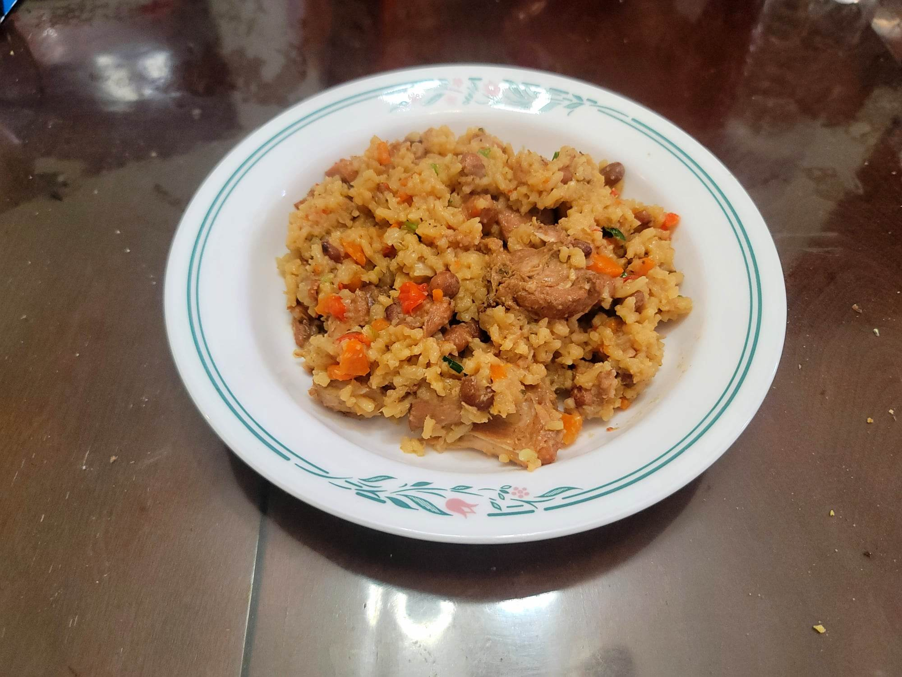

Pelau Chicken and Pigeon Peas

Ingredients:
Marinade:
- 3 lb Chicken thighs, boneless, skinless, 2" cubed
- 2 tbsp Green seasoning
- 2 tsp Garlic, grated
- 1 tbsp Worcestershire sauce
- 1 tbsp Soy sauce
- 1 tbsp Ketchup
- Salt, to taste
- Black pepper, to taste
Pelau:
- 2 tbsp Vegetable oil
- 3 tbsp Sugar
- 2 cups Parboiled basmati rice, washed and drained
- 1 Onion, diced
- 1 small Red bell pepper, diced
- 2 cups Canned pigeon peas
- Optional: 1 cup Carrot, diced
- 2 cups Coconut milk
- 2 cups Chicken stock
- 1 Scotch bonnet, poked all over with a fork
- 1/2 cup Scallions, thinly sliced
- Salt, to taste
- Black pepper, to taste
Instructions:
- Combine the marinade ingredients and let marinate overnight.
- Pour the oil in a large pot over medium-high heat. Once hot but not smoking, add in the sugar in an even layer. Let the sugar melt.
- As soon as the sugar starts to froth, add in the marinated chicken. Cook, stirring often, for 7-10 minutes.
- Add in the rice to the pot. Sauté for 3 minutes. Then add in the onion, bell pepper, pigeon peas, and carrots. Sauté for another minute.
- Pour in the coconut milk and chicken stock along with salt and pepper to taste. Add the scotch bonnet. Bring to a boil and then partially cover. Continue to boil for 7-8 minutes.
- Cover the pot fully and reduce the heat to low. Let cook for about 25-30 minutes, or until all the liquid is absorbed.
- Remove from the heat and toss with scallions. Taste and adjust salt and pepper if needed. Serve immediately.